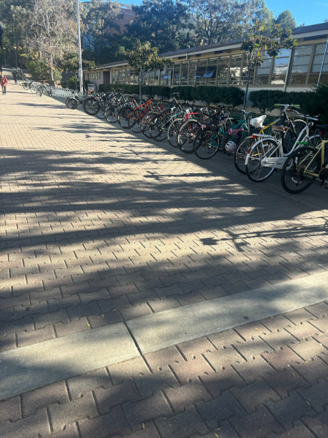

Safer Cycling in San Luis Obispo
Cycling, walking, and other forms of micromobility play an important role in how people travel throughout San Luis Obispo and the Cal Poly campus. Students, faculty, and residents depend on these modes every day to move between classes, housing, work, and leisure destinations across the city. As Cal Poly continues to grow, these forms of transportation have become even more central to campus life. Many students choose bicycles or other self propelled vehicles because they are faster than walking, more convenient than driving, and are better suited for short, frequent trips. At the same time, a large portion of the community chooses to walk, which creates a constant mix of pedestrians and riders going in the same direction. With so many people going the same direction, it is only natural that they will end up on the same paths which have not been designed to support such a high level of multimodal activity, oftentimes leading to dangerous situations and in some cases, collisions that can result in serious injury.
The conditions in San Luis Obispo reflect broader trends seen throughout the United States. Nationally, cycling safety outcomes are worse than in countries that have invested heavily in bicycle infrastructure. The United States averages 4.7 cycling deaths per 100 million trips, while the Netherlands averages 1.0, Denmark 1.1, and Germany 1.3. These countries have high ridership levels but far fewer fatalities because their streets are designed around protected lanes, separated paths, and predictable movement patterns that prevent collisions. In contrast, much of the infrastructure in the United States relies on painted bike lanes or shared routes that offer minimal physical protection. San Luis Obispo is no different, with many of its bike lanes positioned directly next to fast-moving traffic or within crowded pedestrian corridors.

In 2014, San Luis Obispo reported 50.9 bicycle collisions per 1,000 bike commuters, a rate that is unusually high for a small city. Furthermore, many minor crashes and dangerous interactions go unreported, especially on campus, where riders often experience close calls or minor collisions but continue without reporting them to the proper authorities.
The purpose of this project is to demonstrate that improving bicycle infrastructure in San Luis Obispo is not a matter of preference but a matter of safety, equity, and accessibility. By combining successful international design with local collision data and lived experiences, we aim to prove beyond a reasonable doubt that SLO is not safe for cyclists and provide policymakers a cost effective solution to make it so.
What This Site Covers
The website introduces the current conditions in SLO, analyzes survey data and collision patterns, and outlines infrastructure-based solutions that focus on safety rather than enforcement alone.
Our Goal
Our goal is to present a clear, well-supported case for protected bike infrastructure on and around the Cal Poly campus, giving decision-makers a practical path toward a safer and more equitable transportation system.
Word count: 414